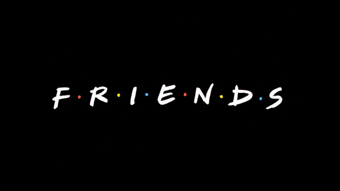
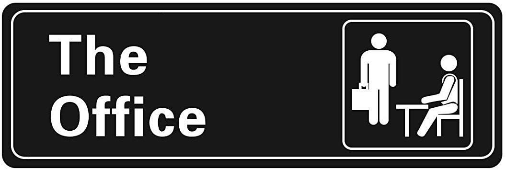
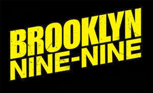

Here are our three favourite TV-Shows to enjoy watching with friends and family!
There never has been a sitcom that truly pictures life among the singles (twenty-something) as good as this show does. It's not just comedy, it presents the episodes in such a way that one can truly identify with the situations they face so the audience has something to talk about in coffee shops too. The humor is universal. The viewer feels like they're part of the group every time they watch it because they feel the different emotions they go through. Plus, of course, it is so much fun because it's fast-paced. Every scene and every moment is relative to what is going to happen next so you don't feel like it is dragging you onto nothing. Just like how a sitcom should be. Funny!
Several great sitcoms in similar formats have aired since 2005, but few have reached the creative heights The Office once did. During those early seasons, the show's creators penned compelling tales about how a performance review session can cause part of the soul to die, and maximized the humor and storytelling of every frame and well-timed reaction shot. So even though its later seasons never lived up to its groundbreaking early explorations of contemporary work culture, what The Office leaves us with are memories of television comedy at its best.
Once any show gets past a certain number of seasons or episodes, quality is always a concern. In comedies, this is especially an issue when it comes to characterization. Characters become their catchphrases or their quirks, with no nuance or personality outside of that. Seven seasons in, Brooklyn Nine-Nine is at a high risk of that happening; and the way Season Six had to function as Brooklyn Nine-Nine 101, the show could’ve fallen right into that trap and possibly remained there heading into this season. Three episodes into Season Seven, the writers seem determined to prove that they still have quite a bit of story to tell with these characters. They’re doing a good job so far.